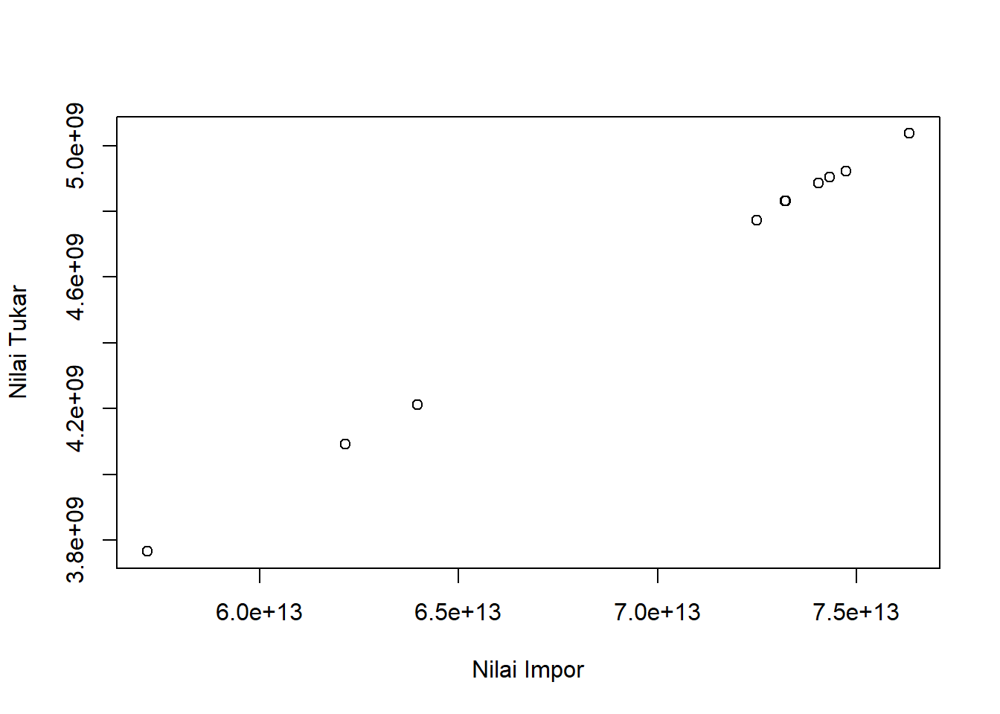
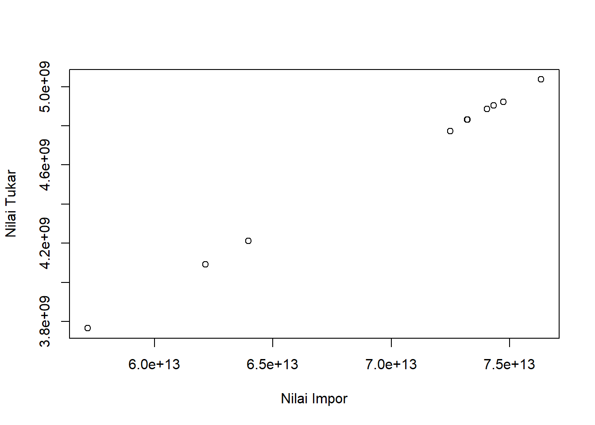
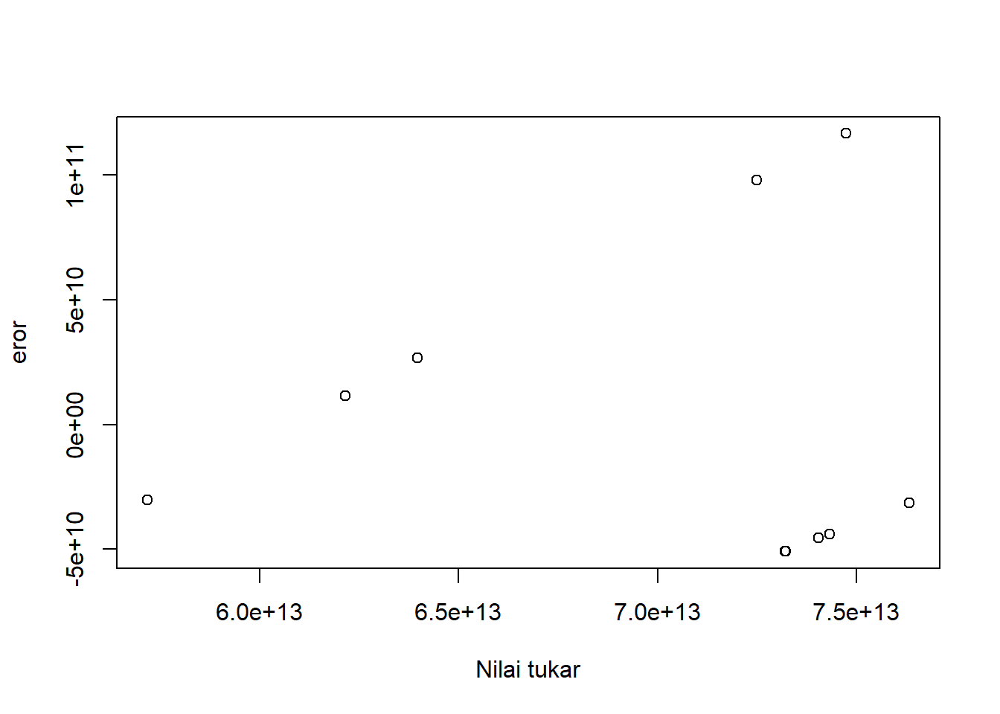
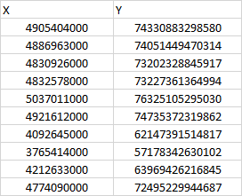

setwd('C:/metopel/UAS')
library(readxl)Warning: package 'readxl' was built under R version 4.2.2dat<-read_excel("latihan.xlsx")
reg1<-lm(Y~X,data=dat)
plot(dat$Y,dat$X,ylab="Nilai Tukar",xlab="Nilai Impor")
Metode Penelitian Politeknik APP Jakarta

Meskipun tidak memiliki ladang minyak sama sekali, selama beberapa dekade Singapura telah menjadi salah satu produsen bahan bakar terbesar di dunia karena memiliki beberapa kilang besar. Stok cadangan bahan bakar yang dimiliki juga besar. Lokasi Singapura yang strategis serta kemudahan investasi dan perizinan juga menjadi alasan mengapa perusahaan minyak multinasional menempatkan kilang mereka di negara tersebut. Setiap tahun mengimpor BBM dari Singapura menguras devisa Indonesia. Padahal, impor BBM inilah yang membuat Indonesia mengalami defisit perdagangan dengan negara maju ASEAN.
Sementara itu, Indonesia mengimpor 26,67 juta ton minyak dan gas senilai $23,91 miliar selama enam bulan terakhir. Angka ini naik dua kali lipat dibanding realisasi impor pada periode yang sama tahun lalu. Pada saat itu, impor minyak dan gas mencapai $13,31 miliar, dibandingkan dengan angka konservatif sebesar 24,3 juta ton.
Penelitian ini hanya membahas terkait pengaruh Impor minyak dari negara Singapura terhadap nilai tukar rupiah pada tahun 2013-2022. Batasan permasalahan ini digunakan untuk menghindari penyimpangan atau pelebaran dari pokok masalah.
Apakah Impor MInyak dari negara Singapura dapat berpengaruh terhadap nilai tukar rupiah?
Tujuan dari penelitian ini untuk mengetahui bagaimana pengaruh impor minyak dari negara Singapura terhadap nilai tukar rupiah. Manfaat yang diharapkan dari penelitian ini adalah untuk mengetahui pengaruh impor minyak dari negara Singapura terhadap nilai tukar rupiah guna mendapatkan gambaran dan menetapkan kebijakan terhadap impor minyak dari Singapura.
Muhammad Idris : Setiap tahun, Indonesia selalu impor bahan bakar minyak (BBM) dari Singapura, negara yang hampir tidak memiliki sumber daya alam
Nyoman Ary Wahyudi : BPS melaporkan nilai impor BBM Indonesia dari Singapura dan Malaysia mencapai masing-masing US$6,37 miliar dan US$3,41 miliar per semester 1/2022.
| Tahun | Nilai Impor | Nilai Tukar |
|---|---|---|
| 2013 | 49 054,04000 | Rp 74,330,883,298,580 |
| 2014 | 48 869,63000 | Rp 74,051,449,470,314 |
| 2015 | 48 309,26000 | Rp 73,202,328,845,917 |
| 2016 | 48 325,78000 | Rp 73,227,361,364,994 |
| 2017 | 50 370,11000 | Rp 76,325,105,295,030 |
| 2018 | 49 216,12000 | Rp 74,735,372,319,862 |
| 2019 | 40 926,45000 | Rp 62,147,391,514,817 |
| 2020 | 37 654,14000 | Rp 57,178,342,630,102 |
| 2021 | 42 126,33000 | Rp 63,969,426,216,845 |
| 2022 | 47 740,90000 | Rp 72,495,229,944,687 |
penelitian ini menggunakan data Badan Pusat Statistik (BPS)
Plot Impor Terhadap Nilai Tukar
setwd('C:/metopel/UAS')
library(readxl)Warning: package 'readxl' was built under R version 4.2.2dat<-read_excel("latihan.xlsx")
reg1<-lm(Y~X,data=dat)
plot(dat$Y,dat$X,ylab="Nilai Tukar",xlab="Nilai Impor")
Plot Eror Terhadap Nilai Tukar
setwd('C:/metopel/UAS')
library(readxl)
dat<-read_excel("latihan.xlsx")
reg1<-lm(Y~X,data=dat)
dat$u<-resid(reg1)
plot(dat$Y,dat$u,ylab="eror",xlab="Nilai tukar")
Teknik analisis yang digunakan pada penelitian ini adalah teknik kuantitatif dan pengolahan deskriptif. Teknik analisis kuantitatif adalah analisis yang dilakukan dengan menghitung angka-angka yang menggunakan indeks nilai tukar rupiah terhadap nilai ekspor kopi ke negara Amerika Serikat. Metode yang dipilih adalah regresi univariat atau Ordinary Least Square (OLS) dengan 1 variabel independen. Penelitian ini bermaksud mencari hubungan antara hwy dan cty. Spesifikasi yang dilakukan adalah:
di mana \(y_t\) adalah nilai tukar dan \(x_t\) adalah nilai impor.

Hasil pengaruh jumlah impor terhadap Nilai tukar rupiah diestimasi menggunakan regresi multivariat.Hasilnya ditunjukkan sebagai berikut:
library(readxl)
dat<-read_excel("latihan.xlsx")
reg1<-lm(Y~X,data=dat)
summary(reg1)
Call:
lm(formula = Y ~ X, data = dat)
Residuals:
Min 1Q Median 3Q Max
-5.086e+10 -4.512e+10 -3.077e+10 2.278e+10 1.166e+11
Coefficients:
Estimate Std. Error t value Pr(>|t|)
(Intercept) 5.083e+11 2.355e+11 2.159 0.0629 .
X 1.506e+04 5.070e+01 296.997 <2e-16 ***
---
Signif. codes: 0 '***' 0.001 '**' 0.01 '*' 0.05 '.' 0.1 ' ' 1
Residual standard error: 6.62e+10 on 8 degrees of freedom
Multiple R-squared: 0.9999, Adjusted R-squared: 0.9999
F-statistic: 8.821e+04 on 1 and 8 DF, p-value: < 2.2e-16Berdasarkan dari data hasil analisis kuantitatif, diketahui bahwa Impor Minyak ke Singapura berpengaruh positif terhadap nilai tukar rupiah dan Minyak merupakan salah satu komoditas utama dengan volume impor terbesar Indonesia. Oleh karena itu, jika impor minyak berpengaruh positif terhadap nilai tukar rupiah maka akan mempengaruhi nilai tukar rupiah terhadap USD.
Siska monita, Devi Andriyani Vol 10 no (1) https://ojs.unimal.ac.id/ekonomika/article/view/4508
https://www.bps.go.id/indicator/8/2173/6/volume-impor-migas-nonmigas.html
Nadia Intan Fajarli, Minggu, 4 September 2022. Minyak Mentah Indonesia Dijual ke Singapura, Dibeli Lagi setelah Jadi BBM, Devisa Negara Terkuras https://www.kompas.tv/article/325205/minyak-mentah-indonesia-dijual-ke-singapura-dibeli-lagi-setelah-jadi-bbm-devisa-negara-terkuras
Muhamad Syarial, 28/05/2022 Jadi Produsen Minyak Mentah, Kenapa Indonesia Masih Impor BBM dari Singapura?. https://www.kompas.com/wiken/read/2022/05/28/081500681/jadi-produsen-minyak-mentah-kenapa-indonesia-masih-impor-bbm-dari?page=all